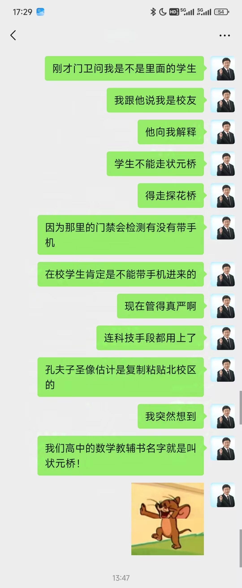
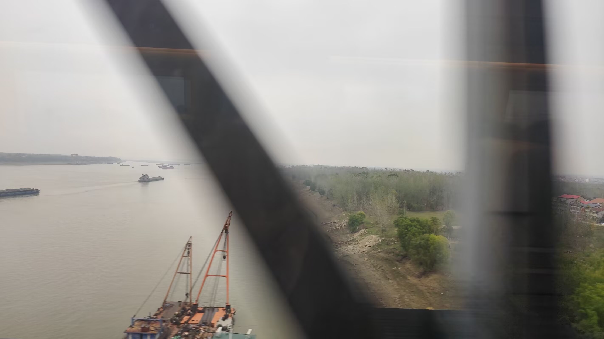
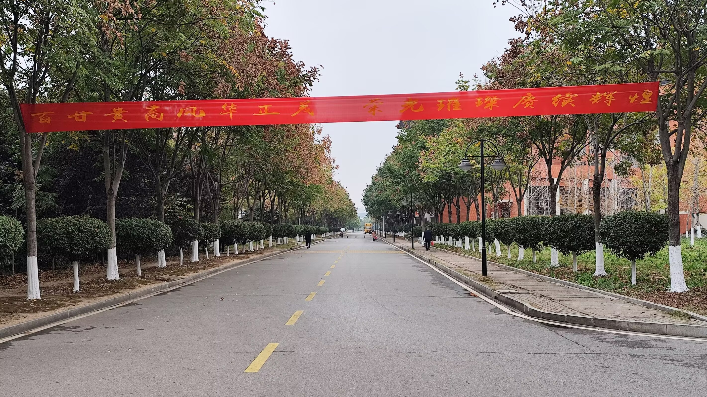

Journal · 2024-11-24
湖北省武汉市
云破月来花弄影，
共君长行莫为期。
白日放歌须纵酒，
青春作伴好还乡！
恍如隔世啊，
黄州府，苏东坡，
南湖路一号，还有南校区，
以及“黄冈中学附属大学”，
一切都那么的熟悉且陌生！
久违了，黄州小城;
久违了，黄州的学府。
小小的黄州，大大的力量！
宋梦菲 : 怎么变化这么大我的天
柴江赣北 : 以前，HG2.0坐落在南湖路的农田上，通身“汉白玉配色”，人畜无害，童叟无欺； 现在，她“黑化”成HG3.0了，“褚红装”饰以“黑曜石配色”，连“奥德赛楼”都缺“德”了！ 而这一切仅仅是因为：武德充沛，才有资格不讲武德，才有实力发展HG Plus !
柴江赣北 :
(倒数第三到第五张插图)
这是之前的HG 2.0版。个人感觉，汉白玉配色，虽不霸气，却也好看，也挺耐看！
柴江赣北 : 感谢化学刘老师给我买的蛋糕！尽管我把您叫成“严老师”了
(倒数第二张插图)
柴江赣北 :
(倒数第一张插图)



Clouds part, the moon breaks through, flowers cast their shadows;
Let us journey on together without a set return date.
Sing out in broad daylight, for we must drink deep of wine;
With youth as our companion, we return home with joy!
It feels like another lifetime,
Huangzhou Prefecture, Su Dongpo,
No. 1 Nanhu Road, and the South Campus,
and the “Huanggang Middle School Affiliated University”,
everything is so familiar and yet so strange!
Long time no see, little city of Huangzhou;
Long time no see, the schools of Huangzhou.
A small Huangzhou, a great strength!
Song Mengfei : How could it change so much, oh my god
Chai Jiangganbei : Before, HG2.0 sat on the farmland of Nanhu Road, dressed all over in “white marble color scheme”, harmless to man and beast, honest to young and old; now, she has “turned dark” into HG3.0, her “dark red dress” adorned with a “black obsidian color scheme”, and even the “Odyssey Building” has lost its “virtue”! And all of this is only because: only when one is full of martial virtue does one have the right to disregard martial virtue, and only then the strength to develop HG Plus!
Chai Jiangganbei :
(third through fifth illustrations from the last)
This is the previous HG 2.0 version. Personally, I feel the white marble color scheme, though not domineering, is still quite good-looking and also very pleasant to look at over time!
Chai Jiangganbei : Thank you, chemistry teacher Ms. Liu, for the cake you bought me! Even though I mistakenly called you “Teacher Yan”
(second-to-last illustration)
Chai Jiangganbei :
(last illustration)
Les nuages se dissipent, la lune perce, les fleurs dessinent leur ombre ;
Cheminons ensemble, sans nous fixer de date de retour.
Chantons en plein jour, car il faut vider nos coupes ;
Avec la jeunesse pour compagne, nous rentrons joyeusement au pays !
On dirait une autre vie,
la préfecture de Huangzhou, Su Dongpo,
le n°1 de la rue Nanhu, et aussi le campus sud,
ainsi que l'“Université affiliée au lycée de Huanggang”,
tout est à la fois si familier et si étranger !
Te revoilà enfin, petite ville de Huangzhou ;
vous revoilà enfin, établissements de Huangzhou.
Petite Huangzhou, grande force !
Song Mengfei : Comment est-ce que ça a pu autant changer, mon Dieu
Chai Jiangganbei : Avant, HG2.0 se dressait sur les terres agricoles de la rue Nanhu, tout habillée d'une “robe de marbre blanc”, inoffensive pour l'homme comme pour la bête, honnête envers petits et grands ; maintenant, elle s'est “assombrie” en HG3.0, sa “robe rouge sombre” ornée d'une “palette d'obsidienne noire”, et même le “bâtiment Odyssey” a perdu sa “vertu” ! Et tout cela pour une seule raison : ce n'est que lorsqu'on déborde de vertu martiale qu'on a le droit d'ignorer la vertu martiale, et la force de développer HG Plus !
Chai Jiangganbei :
(illustrations : la cinquième à la troisième en partant de la fin)
Voici l'ancienne version HG 2.0. Personnellement, je trouve que la robe de marbre blanc, sans être imposante, est plutôt jolie, et même agréable à regarder avec le temps !
Chai Jiangganbei : Merci au professeur de chimie, madame Liu, pour le gâteau que vous m'avez acheté ! Même si je vous ai appelée à tort “professeur Yan”
(illustration : l'avant-dernière)
Chai Jiangganbei :
(illustration : la dernière)
Die Wolken reißen auf, der Mond bricht hervor, die Blumen werfen ihre Schatten;
Lass uns gemeinsam weiterziehen, ohne eine Frist für die Rückkehr zu setzen.
Am hellen Tag singen wir laut, denn wir müssen den Wein in vollen Zügen trinken;
Mit der Jugend als Gefährtin kehren wir froh nach Hause zurück!
Es kommt mir vor wie ein anderes Leben,
die Präfektur Huangzhou, Su Dongpo,
Nr. 1 der Nanhu-Straße, und auch der Süd-Campus,
sowie die “Huanggang-Mittelschule-Hochschule”,
alles so vertraut und doch so fremd!
Lange nicht gesehen, kleine Stadt Huangzhou;
lange nicht gesehen, die Lehranstalten von Huangzhou.
Kleines Huangzhou, große Kraft!
Song Mengfei : Wie kann sich das nur so sehr verändert haben, mein Gott
Chai Jiangganbei : Früher stand HG2.0 auf dem Ackerland der Nanhu-Straße, ganz in “weißer Marmor-Farbgebung”, ungefährlich für Mensch und Tier, ehrlich gegenüber Jung und Alt; jetzt hat sie sich zu HG3.0 “verdunkelt”, ihr “dunkelrotes Kleid” mit “schwarzer Obsidian-Farbgebung” verziert, und selbst das “Odyssee-Gebäude” hat seine “Tugend” verloren! Und das alles nur, weil: Nur wer voller kriegerischer Tugend steckt, darf es sich leisten, die kriegerische Tugend zu missachten, und hat erst dann die Kraft, HG Plus zu entwickeln!
Chai Jiangganbei :
(die drittletzte bis fünftletzte Illustration)
Das ist die frühere Version HG 2.0. Ich persönlich finde, die weiße Marmor-Farbgebung ist zwar nicht dominant, aber dennoch hübsch und mit der Zeit auch recht ansehnlich!
Chai Jiangganbei : Danke, Chemielehrerin Frau Liu, für den Kuchen, den Sie mir gekauft haben! Auch wenn ich Sie fälschlich “Lehrerin Yan” genannt habe
(die vorletzte Illustration)
Chai Jiangganbei :
(die letzte Illustration)